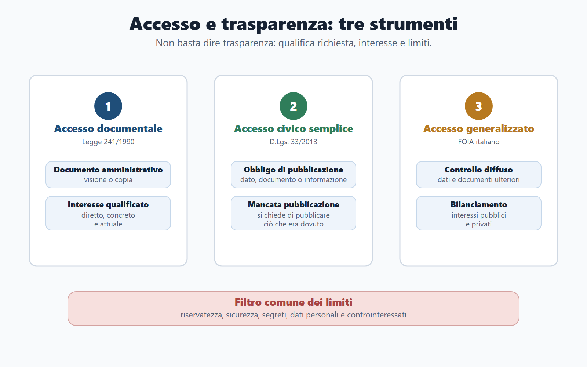
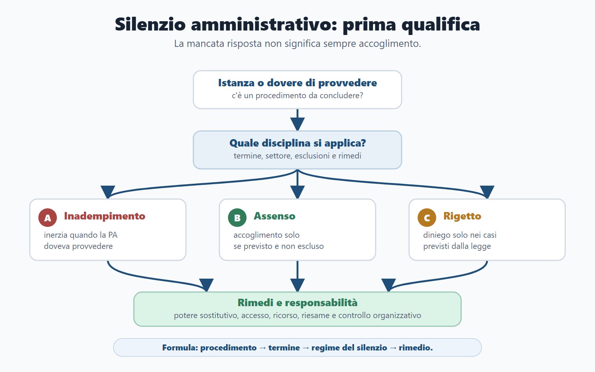
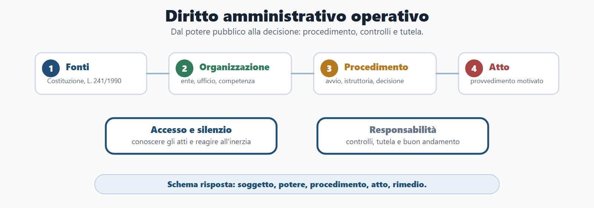
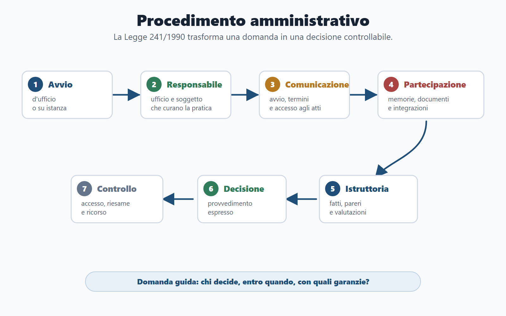
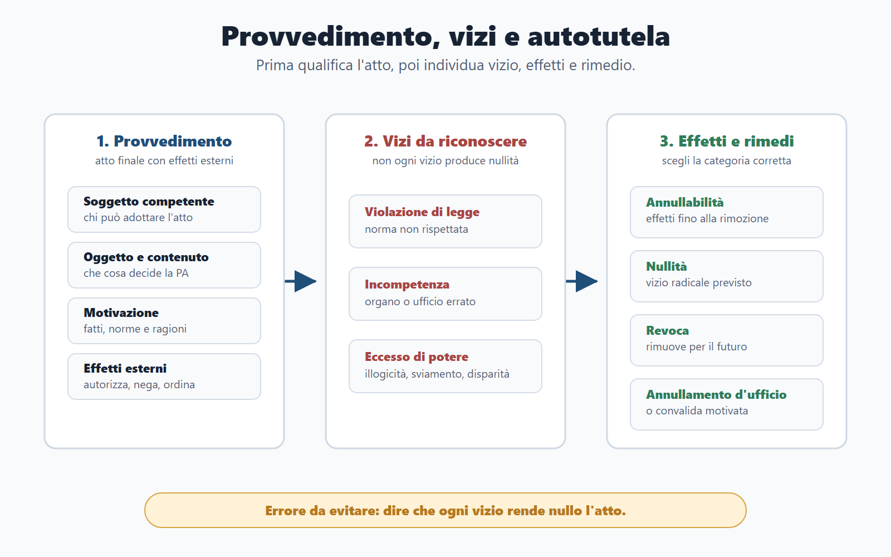

VOL-01 · Capitolo 05
Parte II · Materie comuni
Diritto amministrativo
operativo
Studialo partendo da una domanda concreta: come decide la pubblica amministrazione e quali regole deve rispettare quando incide sulla posizione di cittadini, imprese, dipendenti o altri enti? La PA non agisce come un privato libero di scegliere secondo convenienza.
Schema
Accessi trasparenza limiti

Schema
Silenzio rimedi decisione

Schema
Diritto amministrativo mappa operativa

Schema
Procedimento amministrativo flusso

Schema
Provvedimento vizi autotutela

01 · La chiave
Interesse pubblico che diventa azione
Il procedimento si avvia, il responsabile cura l’istruttoria, gli interessati possono partecipare. L’amministrazione rispetta termini e motivazione; il provvedimento produce effetti; vizi, silenzio, accesso e rimedi hanno conseguenze diverse. Agisce in base alla legge, per fini pubblici, con tracciabilità, imparzialità, trasparenza, responsabilità e controllo.
Fonti e organizzazione
Costituzione, l. 241/1990, discipline speciali; organo, ufficio, competenza.
Procedimento e provvedimento
Sequenza e atto che produce effetti; responsabile, partecipazione, motivazione.
Accesso, silenzio, rimedi
Tre accessi, inerzia qualificata, autotutela, giustizia amministrativa.
02 · BANDO
Come usare questo capitolo sul bando
| Come usarlo | Errore da registrare nel diario | |
|---|---|---|
| B — Bando | Cerca procedimento, provvedimento, accesso, trasparenza, anticorruzione, silenzio, autotutela, responsabilità, digitalizzazione, conferenza di servizi. | Studiare l’enciclopedia senza il programma. |
| A — Aree | Collega a Costituzione, pubblico impiego, enti locali, trasparenza, contratti, performance e responsabilità. | Isolare l’amministrativo dal resto del nucleo. |
| N — Nuclei | Fonti, organizzazione, situazioni soggettive, principi, procedimento, responsabile, partecipazione, provvedimento, vizi, autotutela, silenzio, accessi, semplificazione. | Saltare i nuclei per i dettagli di settore. |
| D — Diario | Confondere accessi, dire sempre «silenzio-assenso», dimenticare il responsabile, parlare di trasparenza senza limiti. | Ripetere le stesse trappole. |
| O — Output | Tabella comparativa, risposta orale, griglia di procedimento, caso su istanza senza risposta. | Saper definire e non applicare. |
03 · Fonti e principi
La disciplina generale offre lo schema; la speciale può adattarlo
La l. 241/1990 è la fonte centrale del procedimento, ma non esaurisce la materia. Un concorso, una gara, un procedimento edilizio o disciplinare possono avere norme speciali. L’art. 97 Cost. fissa imparzialità e buon andamento; la 241 collega legalità, economicità, efficacia, pubblicità, trasparenza, collaborazione e buona fede al procedimento.
| Principio | Significato da concorso | Errore da evitare |
|---|---|---|
| Legalità | La PA agisce nei casi, modi e fini previsti dall’ordinamento. | Pensare che l’interesse pubblico giustifichi qualunque scelta. |
| Imparzialità | Decidere senza favoritismi e con criteri oggettivi. | Confonderla con neutralità passiva. |
| Buon andamento | Organizzazione ordinata, efficiente, orientata ai risultati. | Ridurlo a rapidità senza garanzie. |
| Ragionevolezza e proporzionalità | Decisione coerente, non arbitraria, non eccessiva rispetto al fine. | Trascurare il bilanciamento tra interessi. |
| Pubblicità e trasparenza | Azione conoscibile nei modi e limiti previsti. | Dire che tutto deve essere sempre pubblicato. |
04 · Organizzazione e situazioni
Organo, ufficio, competenza; diritto e interesse legittimo
L’amministrazione è il soggetto. L’organo manifesta la volontà dell’ente. L’ufficio è la struttura che svolge istruttoria o gestione. La competenza indica chi può agire per materia, territorio o grado. Un atto di soggetto non competente può viziarsi; un procedimento senza responsabile incide su tempi, partecipazione e tutela.
Diritto soggettivo e interesse legittimo
Il diritto soggettivo è una posizione di vantaggio piena. L’interesse legittimo è la posizione del privato rispetto all’esercizio di un potere: non pretendi solo il bene finale, pretendi che il potere sia esercitato correttamente. Da qui partecipazione, accesso, motivazione, silenzio, impugnazione, risarcimento nei casi previsti.
Vincolata, discrezionale, tecnica, merito
Attività vincolata: se ricorrono i presupposti, la PA deve decidere in un certo modo. Discrezionale: valuta interessi e sceglie tra soluzioni legittime, motivando. Discrezionalità tecnica: valutazioni specialistiche. Merito: opportunità entro la legge. Discrezionalità non è arbitrio; il giudice non si sostituisce di regola nella pura opportunità.
05 · Procedimento
La sequenza che rende l’azione controllabile
Il procedimento è la sequenza organizzata di atti e attività con cui la PA forma la decisione. Non coincide con il provvedimento: quello è l’esito che produce effetti. Gli atti endoprocedimentali (pareri, richieste, verbali) preparano, non decidono.
Avvio
D’ufficio o su istanza. Unità organizzativa e responsabile.
Istruttoria
Comunicazione di avvio, partecipazione, fatti, pareri, documenti.
Decisione
Provvedimento espresso, salvo discipline sul silenzio; poi tutela.
La 241 impone di perseguire i fini determinati dalla legge, di non aggravare inutilmente il procedimento e di concluderlo secondo regole conoscibili. In un caso, parti sempre da: chi ha avviato, quale ufficio, quale responsabile, quale termine.
06 · Responsabile e partecipazione
Il responsabile non «decide sempre»
Valuta ammissibilità e presupposti, accerta i fatti, chiede integrazioni, cura comunicazioni, può proporre la conferenza di servizi, adotta il provvedimento se competente oppure trasmette gli atti all’organo competente. Se l’organo finale si discosta dall’istruttoria, deve motivare.
| Istituto | Funzione | Attenzione |
|---|---|---|
| Comunicazione di avvio | Informa gli interessati: amministrazione, oggetto, ufficio, responsabile, termine, rimedi, accesso. | Dovuta quando la legge lo prevede, anche in forma digitale. |
| Partecipazione | Visione degli atti e memorie o documenti pertinenti, da valutare. | Il cittadino non è destinatario passivo. |
| Preavviso di rigetto (10-bis) | Nei procedimenti a istanza, comunica i motivi ostativi; dieci giorni per osservazioni; i termini si sospendono. | Non si applica alle procedure concorsuali né ai procedimenti previdenziali e assistenziali degli enti previdenziali su istanza di parte. |
07 · Provvedimento e vizi
Chi, quale potere, quale effetto, quale motivazione
Il provvedimento è l’atto con cui la PA esercita un potere e produce effetti su una situazione specifica: autorizza, nega, ordina, sanziona, revoca, annulla, esclude, aggiudica. La motivazione spiega il percorso che collega istruttoria, interesse pubblico e decisione.
| Istituto | Significato | Errore da evitare |
|---|---|---|
| Annullabilità | Violazione di legge, eccesso di potere, incompetenza. L’atto produce effetti finché non è annullato. | Dire che ogni vizio rende l’atto nullo. |
| Nullità | Vizi radicali: mancanza di elementi essenziali, difetto assoluto di attribuzione, elusione del giudicato, altri casi di legge. | Usare la nullità come categoria generica. |
| Revoca | Rimuove per il futuro per interesse pubblico, mutamento di fatto o nuova valutazione consentita. | Confonderla con l’annullamento per illegittimità originaria. |
| Annullamento d’ufficio | Rimuove un atto illegittimo se vi è interesse pubblico, in termine ragionevole, valutando destinatari e controinteressati. Per autorizzazioni e vantaggi economici, anche da silenzio-assenso, il limite massimo ordinario è sei mesi dall’adozione. | Dire che la PA può annullare sempre, o usare il vecchio limite di dodici mesi. |
| Convalida | Corregge un atto annullabile per interesse pubblico, in termine ragionevole. | Sanatoria automatica di ogni vizio. |
08 · Silenzio
Prima qualifico il procedimento, poi valuto il regime
Non ogni mancata risposta produce lo stesso effetto. Dire automaticamente «silenzio-assenso» è un errore da concorso. L’amministrazione deve adottare un provvedimento espresso quando il procedimento deriva da istanza o deve essere iniziato d’ufficio, salvo discipline specifiche.
| Figura | Che cosa è |
|---|---|
| Silenzio-inadempimento | La PA resta inerte quando avrebbe dovuto provvedere. Non coincide con accoglimento automatico. |
| Silenzio-assenso | In alcuni procedimenti a istanza, il silenzio può equivalere ad accoglimento, salvo esclusioni. Non vale in tutti i settori. |
| Silenzio-rigetto | In casi previsti dalla legge, il silenzio equivale a rigetto. |
| Rimedi | Potere sostitutivo, accesso, tutela davanti al giudice amministrativo. Prima il procedimento, poi il significato del silenzio. |
Se l’amministrazione non risponde entro il termine, la domanda si considera sempre accolta? No. Occorre la disciplina applicabile, il dovere di concludere, le ipotesi di silenzio significativo e i rimedi contro l’inerzia.
09 · Tre accessi
Documentale, civico semplice, civico generalizzato
Trasparenza non significa pubblicare tutto. Significa rendere conoscibile ciò che deve esserlo, con regole, limiti, responsabilità e bilanciamento. La pubblicazione online non sostituisce sempre l’accesso.
| Fonte e funzione | Presupposto | |
|---|---|---|
| Accesso documentale | L. 241/1990: visione e copia di documenti amministrativi. | Interesse diretto, concreto e attuale collegato a una situazione giuridicamente tutelata. Non spetta a chiunque. |
| Accesso civico semplice | D.Lgs. 33/2013: far rispettare un obbligo di pubblicazione. | Omessa pubblicazione. Chiunque. Non serve per qualunque documento detenuto. |
| Accesso civico generalizzato | D.Lgs. 33/2013 come modificato dal D.Lgs. 97/2016: controllo diffuso. | Chiunque, senza motivazione, su dati ulteriori rispetto agli obblighi, nei limiti. Non costringe a creare nuovi documenti in modo sproporzionato. |
10 · Semplificazione e digitale
Ridurre passaggi inutili non elimina legalità e controlli
La conferenza di servizi coordina pareri, intese, nulla osta di più amministrazioni; può essere istruttoria, decisoria o preliminare, anche telematica. La SCIA consente l’avvio sulla base di segnalazione, con controlli successivi: non elimina i poteri di verifica. Gli accordi possono integrare o sostituire il provvedimento nei limiti previsti, senza sacrificare l’interesse pubblico.
Documentazione (D.P.R. 445/2000)
Certificati, autocertificazione, dichiarazioni sostitutive, copie conformi. La PA evita richieste inutili quando l’ordinamento consente dichiarazioni o acquisizioni d’ufficio. Le dichiarazioni false possono produrre decadenza e responsabilità: non sono un errore innocuo.
Digitalizzazione
Non è «usare il computer». È gestire atti, fascicoli, protocollo, accessi e conservazione in modo tracciabile, sicuro e accessibile. Il CAD (D.Lgs. 82/2005) collega identità digitale, validità dei documenti, interoperabilità e procedimenti digitali. Lo sviluppo degli strumenti sta nel capitolo sull’informatica.
11 · Beni, servizi, tutele
Mappa minima per quiz e orale
| Nucleo | Che cosa ricordare |
|---|---|
| Beni pubblici | Demanio (regime pubblicistico intenso), patrimonio indisponibile (destinazione pubblica), patrimonio disponibile (più vicino alle regole privatistiche). Espropriazione: D.P.R. 327/2001; decreto di esproprio con vincolo, pubblica utilità, indennità. |
| Servizi pubblici | Attività destinata a bisogni della collettività. Gestione diretta, affidamenti, società, concessioni. Carta dei servizi: standard, diritti degli utenti, impegni. |
| Ricorsi amministrativi | Gerarchico (autorità superiore), in opposizione (stessa autorità), straordinario al Presidente della Repubblica (alternativo al giudice, nei limiti). |
| Giustizia amministrativa | TAR primo grado; Consiglio di Stato appello e organo consultivo; ottemperanza per l’esecuzione del giudicato; azioni contro silenzio o diniego di accesso. |
| Sanzioni (l. 689/1981) | Illeciti amministrativi, contestazione, pagamento in misura ridotta quando previsto, ordinanza-ingiunzione. TULPS per polizia amministrativa in forma essenziale. |
12 · Responsabilità
Non solo l’atto sbagliato: organizzazione e rischio
Per il dipendente: diligenza, correttezza, procedure, collaborazione, riservatezza, cura dell’interesse pubblico, prevenzione del conflitto. Per il dirigente il livello è più ampio: assegnare responsabilità, controllare tempi e flussi, prevenire rischi, garantire tracciabilità, promuovere performance, intervenire sulle disfunzioni.
Ufficio opaco
Pratiche senza responsabile, termini non comunicati, ritardi non monitorati, accessi non distinti, documenti non conservati: non è solo disagio per l’utente. È un problema di legalità organizzativa, collegato a performance, anticorruzione e governo del rischio.
Controlli
Interni o esterni, preventivi o successivi, di regolarità, di gestione, strategici o contabili. Responsabilità amministrativa, contabile, erariale, civile, penale, disciplinare: possono coesistere, con presupposti diversi. Corte dei conti: danno erariale e giudizio di conto.
13 · Caso guidato
Istanza senza risposta
Un cittadino presenta al Comune un’istanza per un’autorizzazione. La domanda è protocollata. Dopo settimane nessuna comunicazione, nessun responsabile noto, nessun provvedimento espresso.
Che cosa verificare
Procedimento a istanza? Amministrazione competente? Termine? Responsabile individuato? Comunicazione di avvio dovuta? Partecipazione o integrazioni? Dovere di provvedimento espresso? Significato del silenzio? Rimedi del cittadino? Il caso non è «solo un ritardo».
Risposta modello
Qualificare il procedimento; individuare competente, termine e responsabile. La disciplina generale impone istruttoria ordinata e, di regola, conclusione con provvedimento espresso, salvo silenzio significativo. Il cittadino può chiedere informazioni, esercitare l’accesso e attivare i rimedi contro l’inerzia. Un ufficio che non traccia pratiche espone la PA a inefficienza e a possibili responsabilità. Non basta scrivere «la PA è inadempiente».
14 · Verifica
Due domande da saper spiegare
Procedimento e ruolo del responsabile, con esempio
Il procedimento è la sequenza di atti e attività con cui la PA prepara e adotta una decisione. La disciplina generale è la l. 241/1990: principi, termini, responsabile, partecipazione, accesso, semplificazione. Funzione: rendere l’azione ordinata, trasparente, partecipata e controllabile. Esempio: istanza al Comune; l’ufficio gestisce la pratica, individua il responsabile, istruisce, rispetta i termini e conclude. Il responsabile coordina l’istruttoria e aiuta a evitare inerzia e opacità; non coincide sempre con chi adotta l’atto finale.
Nessuna risposta entro il termine = domanda sempre accolta?
No. La mancata risposta non produce sempre lo stesso effetto. Occorre la disciplina del procedimento, il dovere di concludere, le ipotesi di silenzio significativo e i rimedi contro l’inerzia. La trappola confonde l’inerzia generale con il silenzio-assenso.
15 · Mini-esercizio
Impresa, accesso, «pubblichiamo tutto»
Un’impresa chiede l’accesso a documenti di una procedura che la riguarda. L’ufficio risponde che «per trasparenza tutti i dati saranno pubblicati online», senza qualificare la richiesta né i limiti.
| Punto da verificare | Traccia di correzione |
|---|---|
| Che tipo di accesso? | Probabile accesso documentale: interesse diretto, concreto e attuale. Non FOIA generico e non civico semplice, se non manca un obbligo di pubblicazione. |
| La pubblicazione sostituisce l’accesso? | No. Pubblicare non valuta la posizione dell’impresa né i controinteressati. |
| Controinteressati o dati riservati? | Vanno considerati; eventuale oscuramento o accesso parziale, non formula magica. |
| Errore dell’ufficio | Usa «trasparenza» senza qualificare istituto, fonte, presupposti, limiti e motivazione. |
16 · Da tenere ferme
Cinque regole, con il perché
1. Il diritto amministrativo studia come la PA decide e con quali limiti. Perché in prova conta il percorso, non la definizione isolata.
2. La l. 241/1990 è la base di principi, procedimento, responsabile, partecipazione, accesso documentale, conferenza, silenzio, invalidità e autotutela. Perché la disciplina speciale adatta, non cancella lo schema.
3. Il provvedimento è l’atto che produce effetti; deve essere competente, motivato e collegato all’istruttoria. Perché procedimento e provvedimento non coincidono.
4. I tre accessi hanno presupposti diversi; il silenzio non è sempre assenso. Perché le trappole nascono proprio qui.
5. La responsabilità riguarda anche organizzazione, tempi, digitale e rischio. Perché un ufficio senza responsabile non è solo un disservizio.
Prossimo capitolo
Pubblico impiego e organizzazione della PA
Dal procedimento alle persone: rapporto di lavoro, doveri, dirigenza, performance, PIAO e responsabilità, dentro un apparato che persegue interessi pubblici.